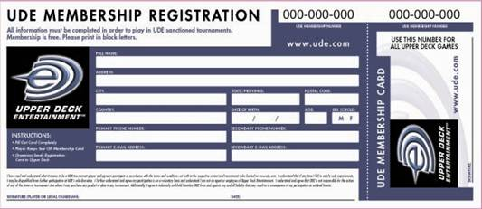

Règles Officielles de Tournoi UDE
Valables jusqu'au 1er octobre 2006
1 Comment utiliser ce document
Les Règles Officielles de Tournoi Upper Deck Entertainment (UDE) ont pour but d'édicter les règles et procédures s'appliquant à tous les tournois pour les jeux de cartes à collectionner (JCC) UDE, y compris Yu-Gi-Oh! JCC, Vs. System JCC, etc. Ces règles et procédures permettent de garantir à chaque joueur que les tournois auxquels ils participent sont amusants et équitables.
La section principale de ce document concerne tous les jeux UDE et doit être appliquée à tous ces jeux. Chaque appendice de ce document s'applique à un jeu en particulier et contient des instructions spécifiques au jeu concerné.
Les documents suivants sont disponibles ou en cours de réalisation :
Règles Officielles de Tournoi UDE : règles générales s'appliquant à tous les jeux
Appendice A : Yu-Gi-Oh!–règles de tournoi spécifiques
Appendice B : Vs. System– règles de tournoi spécifiques
Appendice P : Guide des Pénalités de Tournoi, à l'usage des arbitres
Appendice Z : Glossaire de Tournoi – définition des termes fréquemment utilisés
Exemple : l'appendice A contient des règles ne s'appliquant qu'aux tournois de Yu-Gi-Oh!. L'appendice B contient des règles ne s'appliquant qu'au tournoi du Vs. System. Celui-ci inclut tous les jeux utilisant le Vs. System, tels que Marvel JCC et D.C. Comics JCC. L'appendice P contient un guide des pénalités applicables lors de tournois officiels UDE.
Des appendices supplémentaires, traitant de l'enregistrement des tournois, de l'organisation des tournois officiels, de l'arbitrage des tournois, et de la réalisation de démonstrations de jeux, sont en cours de réalisation.
2 Règles Officielles de Tournoi UDE—Version
· Cette version des Règles Officielles de Tournoi a été mise à jour le 1er avril 2006.
· La prochaine mise à jour de ce document aura lieu avant le 1er octobre 2006.
· La version la plus à jour de ce document est disponible à l'URL suivante : UDE.com/policy.
· Afin d'éviter toute erreur, veuillez détruire ou effacer toute version obsolète de ce document.
3 Joueurs autorisés à participer à un tournoi officiel
La plupart des tournois UDE sont ouverts à tous les joueurs, sans restriction. Les joueurs peuvent participer à autant de tournois qu'ils le souhaitent, aussi souvent qu'ils le souhaitent.
Certains tournois peuvent imposer une limite d'age. Seuls des joueurs n'ayant pas dépassé cet age peuvent participer à de tels tournois. Par exemple, les UDE Scholarship Series sont réservées aux joueurs ayant au plus 17 ans.
Certains tournois, tels que le Circuit Pro UDE, le Championnat d'Europe ou le Championnat National des Etats-Unis, ne sont accessibles que sur invitation. Seul les joueurs ayant obtenu une invitation peuvent participer à un tel tournoi.
Les organisateurs des tournois ne peuvent arbitrairement empêcher un joueur de participer à leur tournoi, sauf si ce joueur a commis des actes de vandalisme, des vols, a enfreint les règles du tournoi ou toute autre règle établie par UDE, etc.
Les personnes suivantes ne peuvent pas participer à un tournoi officiel UDE :
· Toute personne faisant partie de l'équipe d'organisation du tournoi, y compris les arbitres, le teneur de score et les organisateurs du tournoi
· Les joueurs suspendus par UDE pour avoir précédemment enfreint les règles
· Les employés des sociétés Upper Deck, Konami, Viz Media, Marvel, D.C. Comics, etc. ne peuvent prendre part aux tournois des jeux de leurs sociétés. Par exemple, les employés de Konami ne peuvent pas participer aux tournois de Yu-Gi-Oh!.
4 Matériel nécessaire au tournoi
Les joueurs doivent se munir des éléments suivants lors de leur participation à un tournoi :
· Pour les tournois en format construit, un deck conforme aux règles de construction en vigueur
· Un crayon ou stylo afin de remplir les feuilles de match
· Une méthode pour noter les points et autres états de la partie (par exemple : une calculatrice, des marqueurs, un papier et un crayon, etc.)
· Son numéro de membre UDE à neuf chiffres
· Une pièce d'identité à produire lors de son inscription au tournoi
5 Numéro de membre UDE
Les organisateurs de tournois affectent aux joueurs des numéros de membre UDE. Un joueur reçoit une carte de membre UDE lors de sa première participation à un tournoi, dans le cadre du nouveau système de tournois. Il suffit de remplir sa carte de membre pour recevoir un nouveau numéro. L'organisateur du tournoi est chargé de renvoyer l'inscription à UDE. Voir ci-après un exemple de carte de membre UDE :

Les joueurs doivent toujours connaître leur numéro UDE lorsqu'ils s'inscrivent à un tournoi. Si un joueur n'a pas de numéro UDE à neuf chiffres, l'organisateur du tournoi lui en fournira un gratuitement.
Les joueurs ayant un ancien numéro (délivré avant l'automne 2003), doivent s'inscrire de nouveau afin de recevoir un numéro du nouveau système. Tous les nouveaux numéros ont neuf chiffres et sont normalement écrits de la manière suivante : xxx-xxx-xxx.
Chaque joueur ne peut avoir qu'un seul numéro de membre UDE, qui sera utilisé pour tous les jeux UDE. Le numéro utilisé pour les tournois Yu-Gi-Oh! servira aussi pour le Vs. System ainsi que pour tous les autres tournois UDE.
Les joueurs doivent s'assurer qu'ils n'ont pas plusieurs numéros de membre UDE, que ce soit intentionnellement ou par accident. Si un joueur s'aperçoit qu'il a deux numéros de membre UDE (ou plus), il ou elle doit immédiatement contacter UDE à l'adresse suivante : ude@upperdeck.com
6 Responsabilités des joueurs
Les joueurs UDE, pendant ou en dehors d'un tournoi, sont tenus :
· De connaître et de se conformer aux règles de tournoi et du JCC pertinent les plus récentes
· De se conformer aux instructions des arbitres et officiels du tournoi
· De s'assurer de n'avoir qu'un seul numéro de membre UDE
· De se conduire avec respect et sportivité en toutes circonstances
· De se conduire de manière professionnelle et responsable sur, et à proximité, des lieux du tournoi
· De communiquer clairement à leur adversaire chaque action entreprise lors d'une partie
· De garder leurs mains et leurs cartes au-dessus de la table durant un match
· D'informer leur adversaire de toute irrégularité que celui-ci commet lors d'un match, que ce soit vis à vis des règles du jeu, du comptage du score ou des points de vie et ce quel que soit le joueur qui bénéficie d'une telle erreur
· De ne pas parler avec des spectateurs durant un match
· De ne pas employer de mots ou de gestes grossiers ou incorrects
· De ne pas porter de tenue vestimentaire inadéquate ou choquante
· De ne pas faire de remarque insultante envers un autre joueur ou un officiel
· De ne pas dénigrer les tactiques, compétences, etc. d'un adversaire
· De mettre à jour sa date de naissance ainsi que les autres informations pertinentes de leur compte de membre UDE
· De s'assurer que ses statistiques de participation aux tournois sont corrects. Si un joueur pense que ses statistiques sont incorrectes, il doit immédiatement contacter UDE à l'adresse suivante : ude@upperdeck.com
7 Responsabilités des arbitres adjoints
Les arbitres adjoints ont pour rôle d'assister l'arbitre principal afin de garantir l'équité et le professionnalisme des tournois. Un arbitre ne peut pas jouer dans un tournoi qu'il arbitre.
Un arbitre adjoint est tenu aux mêmes responsabilités qu'un joueur (section 6). De plus, un arbitre adjoint doit :
· Avoir une connaissance approfondie de toutes les règles du jeu et de tournoi
· Arriver sur le lieu du tournoi 30 minutes avant le début de la première ronde
· Observer le lieu du tournoi et les joueurs à tout moment
· Toujours se comporter de manière adulte et responsable
· Réaliser des contrôles de deck de manière rapide et efficace
· S'habiller de manière professionnelle et de façon à pouvoir être facilement identifié comme étant un arbitre
· Eviter de porter une tenue d'arbitre en dehors des tournois qu'il arbitre
· Eviter de jouer, d'échanger des cartes ou de participer à toute autre activité susceptible de le distraire de sa tâche ou qui pourrait sembler peu professionnelle
· Eviter de faire preuve de favoritisme envers un joueur ou une équipe
· Résoudre rapidement et efficacement les erreurs de règles dont il est témoin
· Avertir l'arbitre principal immédiatement si un joueur souhaite faire appel d'une décision
· Porter assistance à l'arbitre principal et aux autre officiels du tournoi afin que celui-ci se déroule convenablement
· S'assurer d'avoir bien été enregistré dans la liste des arbitres présents si l'organisateur du tournoi utilise le logiciel de tournoi MANTIS
· S'assurer que tous les avertissements du tournoi sont notifiés au teneur de score
· S'assurer que tous les résultats des matches sont contrôlés par les deux participants et sont enregistrés rapidement
8 Responsabilités de l'arbitre principal
L'arbitre principal est l'autorité suprême d'un tournoi. Aucune personne, pas même l'organisateur du tournoi, ne peut contredire une décision de l'arbitre principal. L'arbitre principal tranche les litiges de règle, s'assure du bon déroulement du tournoi, et supervise l'équipe d'arbitrage. L'arbitre principal ne peut pas jouer dans un tournoi qu'il arbitre.
L'arbitre principal est tenu aux mêmes responsabilités qu'un joueur (section 6) et qu'un arbitre assistant (section 7). De plus, l'arbitre principal doit :
· Etre physiquement présent et disponible durant toute la durée du tournoi
· S'assurer que les résultats de tous les matches sont enregistrés lorsque la ronde est terminée
· S'assurer que le teneur de score prépare les appareillements de la prochaine ronde rapidement
· S'assurer que le début et la fin de chaque ronde sont annoncés clairement aux joueurs et aux autres arbitres
· S'assurer que les feuilles de match sont distribuées rapidement et efficacement
· Etre disponible afin de rendre sa décision si les joueurs font appel d'une décision
· S'assurer que tous les arbitres du tournoi sont enregistrés dans le logiciel MANTIS, si celui-ci est utilisé
· S'assurer que tous les arbitres assistants sont conscients de leurs fonctions et responsabilités et les exercent
9 Responsabilités de l'organisateur de tournoi
L'organisateur du tournoi est la personne responsable du bon déroulement du tournoi pendant toute sa durée ainsi que de sa mise en place.
L'organisateur du tournoi peut aussi exercer les fonctions d'arbitre principal ou assistant. Il ne peut toutefois pas jouer dans le tournoi qu'il organise.
De plus, l'organisateur du tournoi doit :
· S'assurer par avance que le tournoi sera validé par UDE
· S'assurer que le résultat du tournoi est enregistré rapidement après la fin de celui-ci
· S'assurer que suffisamment de cartes de membre UDE sont disponibles pour les nouveaux joueurs venant au tournoi et renvoyer les cartes remplies à Upper Deck dans la semaine
· S'assurer que tous les nouveaux joueurs présentent une pièce d'identité lors de leur inscription, afin de vérifier leur age et leur identité
· S'assurer que le lieu du tournoi est réservé par avance
· S'assurer que le lieu du tournoi est équipé du matériel nécessaire : tables, chaises, nappes, micros, hauts-parleurs, décorations, numéros de tables, machine à découper, etc.
· S'assurer que le matériel nécessaire à l'administration du tournoi est disponible, y compris : une imprimante performante, du papier, un ordinateur, une pendule, la dernière version du logiciel MANTIS, etc.
· S'assurer qu'il y a suffisamment de place et de sièges pour tous les joueurs
· S'assurer que les arbitres reçoivent une dotation à la hauteur du service rendu
· S'assurer que tous les prix offerts en récompense et les règles du tournoi sont claires pour tous les participants avant le début du tournoi
· S'assurer que le lieu où est organisé le tournoi est propre, bien aéré et sécurisé
10 Responsabilités des spectateurs et membres de la presse
Les spectateurs et membres de la presse, lorsqu'ils se trouvent sur le lieu de tournoi, doivent :
· Se conduire avec respect et sportivité en toutes circonstances
· Se conduire de manière professionnelle et responsable sur, et à proximité, des lieux du tournoi
· Se conformer aux instructions des arbitres et officiels du tournoi
· Aviser un officiel de toute infraction aux règles ou erreur de comptage du score ou des points de vie dont ils auraient pu être témoins, quel que soit le joueur à qui cette erreur profite
· Eviter de se tenir trop près des tables et d'embouteiller les voies de passage
· Eviter de parler à un joueur lors d'un match et de parler trop fort à proximité des tables où se déroulent les matches
· Eviter d'employer des mots ou des gestes grossiers ou incorrects
· Eviter de porter une tenue vestimentaire inadéquate
· Eviter de faire des remarques insultantes envers un joueur ou un officiel
11 Cartes contrefaites
Les cartes fausses ou contrefaites ne sont jamais autorisées dans un tournoi. Des cartes photocopiées (parfois appelées "proxies") sont considérées comme fausses et ne sont pas non plus autorisées. Il est illégal d'acheter ou de vendre de fausses cartes.
Si un joueur découvre des cartes contrefaites, il doit en informer immédiatement un adulte ou un officiel. Il doit aussi en informer le service d'enquête des fraudes UDE à l'adresse suivante : fit@upperdeck.com.
12 Cartes marquées
Les joueurs doivent s'assurer que leurs cartes sont en bon état et sont vierges de toute marque qui permettrait de les identifier alors qu'elles sont face cachée. Il est conseillé de vérifier ses cartes entre chaque ronde et de remplacer celles qui seraient marquées ou trop usées.
Les joueurs ne doivent pas modifier excessivement leurs cartes, notamment masquer des portions significatives du texte ou de l'illustration. Entre autres, les joueurs ne doivent pas modifier excessivement ou remplacer l'illustration de leurs cartes.
13 Pochettes
Tous les types de pochettes de protection sont autorisées en tournoi, à condition de remplir les conditions suivantes :
· Les pochettes doivent être toutes identiques
· Les pochettes ne doivent en aucune façon masquer une quelconque zone du côté recto de la carte
· Chaque carte ne doit être que dans une seule pochette (il est interdit de mettre plusieurs pochettes autour de la même carte)
Si un joueur utilise des pochettes, celles-ci doivent toutes provenir du même fabriquant et être toutes de la même couleur, de la même longueur et aussi usées les unes que les autres. Les joueurs doivent fréquemment remplacer leurs pochettes afin qu'elles ne soient ni trop usées, ni marquées. Les pochettes en plastique dur, généralement utilisées pour protéger les cartes lors d'un envoi postal, ne sont pas autorisées, car elles gênent le bon déroulement du jeu.
Avant de placer leurs cartes dans les pochettes, il est recommandé de mélanger le deck et de mélanger les pochettes. Ceci devrait éviter que certaines séries de cartes soient reconnaissables, si les pochettes avaient un quelconque défaut.
Toutes les pochettes doivent être propres et sans marque. Une pochette est une extension de la carte qu'elle protège. Si une pochette est marquée, alors la carte sera considérée comme marquée et le joueur s'expose à la pénalité appropriée.
14 Liste d'extensions
Si un membre UDE reçoit des informations sur une extension qui n'est pas encore sortie, celui-ci doit immédiatement en informer le responsable des tournois UDE à l'adresse suivante : UDE@upperdeck.com. Ces informations doivent être communiquées au responsable des tournois puis détruites. Elles ne doivent en aucun cas être communiquées à d'autres personnes. Toute personne recevant ce type d'informations et qui ne les signale pas au responsable des tournois UDE dans les 24 heures peut être suspendu et interdit d'évènements officiels UDE.
Les previews officielles ne sont pas sujettes à cette règle.
15 Faire appel d'une décision
Si un joueur pense qu'un arbitre assistant a rendu une décision incorrecte, le joueur peut faire appel de cette décision auprès de l'arbitre principal du tournoi. La décision ensuite prise par l'arbitre principal est définitive. Personne, pas même l'organisateur du tournoi, ne peut contredire une décision de l'arbitre principal.
16 Pas de match nul
Les matches nuls ne sont pas autorisés lors des tournois officiels UDE, que ce résultat soit intentionnel ou pas. Une partie peut se conclure de manière nulle, mais pas l'ensemble du match. Il est possible qu'un match se conclue sur une défaite des deux participants si les deux joueurs reçoivent une pénalité de perte du match. Dans ce cas, les deux joueurs perdent le match. Reportez-vous à l'appendice approprié à chaque jeu pour savoir comment déterminer un vainqueur si le match n'est pas terminé à l'issue du temps imparti.
17 Mélanger
Afin de s'assurer que les parties sont équitable, chaque joueur doit s'assurer que son deck est placé dans un ordre suffisamment aléatoire avant de le présenter à son adversaire au début de chaque partie. Il est recommandé d'utiliser plusieurs méthodes de mélange différentes (telles que faire des piles, mélanger en mitraillette, etc.) Une fois qu'un joueur a mélangé son deck, il doit le présenter à son adversaire et celui-ci doit encore le mélanger pendant au moins dix secondes, afin de s'assurer que le mélange est parfaitement aléatoire. Lorsqu'un joueur présente son deck à son adversaire, il admet implicitement l'avoir mélangé de manière satisfaisante. Les joueurs ne peuvent pas et ne doivent pas trier ou organiser leur deck d'une quelconque manière avant de mélanger. Classer son deck (ou une partie de son deck) ou altérer sciemment l'ordre des cartes lorsque l'on mélange est une tricherie.
Les joueurs doivent pouvoir mélanger leur deck rapidement. Les joueurs ont trente secondes pour mélanger leur deck au cours d'une partie et deux minutes entre deux parties.
Les joueurs doivent mélanger leur deck précautionneusement. Les joueurs doivent mélanger en évitant de voir la face des cartes. Les joueurs doivent faire attention à ne pas endommager les cartes lorsqu'ils mélangent le deck de leur adversaire.
18 Valeur de challenge
Chaque tournoi a un valeur de challenge, Valeur-C en abrégé. La Valeur-C d'un tournoi est une mesure relative de la difficulté de ce tournoi par rapport à d'autres tournois. Un joueur peut modifier de manière plus significative son score UDE lors d'un tournoi ayant une plus grande Valeur-C. Le Championnat du Monde aura toujours la plus haute Valeur-C possible. De plus petits tournois auront une valeur moindre.
10 Tournoi officiel UDE, tournoi de découverte
20 Championnat de ville ou d'état, Challenge Comics
30 Championnat régional, tournoi qualificatif pour le Pro Circuit, Scholarship Circuit
40 Championnat national, Championnat Shonen Jump, Championnat 10 000 $
50 Championnat du Monde, tournoi du Pro Circuit
La Valeur-C d'un tournoi peut être modifiée par le niveau d'accréditation de l'arbitre principal. Un arbitre principal de haut rang peut augmenter la Valeur-C d'un tournoi, ce qui peut permettre aux joueurs qui gagnent des matches lors de ce tournoi de faire monter plus vite leur score UDE.
La Valeur-C augmente de un pour chaque niveau de spécialisation en gestion des joueurs et dans les règles du jeu concerné détenu par l'arbitre principal. Seuls ces deux niveaux de l'arbitre principal comptent. Les niveaux de teneur de score, d'organisateur de tournoi et de démonstrateur de jeu ne comptent pas.
Exemple : un arbitre avec un niveau 2 en spécialisation gestion des joueurs, un niveau 1 en spécialisation règles du Vs. System et un niveau 3 en spécialisation règles de Yu-Gi-Oh! ajoute un total de 5 (3+2) à la Valeur-C d'un tournoi de Yu-Gi-Oh! dont il est l'arbitre principal. Ce même arbitre n'ajoute que 3 (2+1) à la Valeur-C d'un tournoi de Vs. System dont il serait l'arbitre principal.
Les joueurs qui reçoivent un score UDE commencent avec un score de 2500. Lorsqu'un joueur participe à un tournoi, son score peut monter ou descendre. Le score d'un joueur est calculé grâce à une formule qui prend un compte son score actuel, celui de son adversaire et la Valeur-C du tournoi.
Exemple : Carl joue dans un tournoi dont la Valeur-C est de 10. Son score est de 2500, celui de son adversaire, Jasmine, aussi. Jasmine remporte le match. Son score passe à 2505, tandis que celui de Carl devient 2495.
Le classement d'un joueur est calculé en comparant son score à celui de tous les autres joueurs pour lequel le classement est établi. Un classement peut être mondial ou plus local, par exemple pour juste une ville.
Exemple : Collin a un score de 3100. Il est classé premier dans sa ville et dans sa région. Il est dixième dans son pays car neuf autre joueurs de son pays ont un score supérieur et trentième dans le monde car vingt-neuf autres joueurs ont un score supérieur dans le monde.
La différence entre score et classement est importante. Le score d'un joueur est un chiffre exact qui commence à 2500 et monte ou descend lorsque le joueur participe à des tournois. Le classement est la position relative d'un joueur par rapport aux autres. Le joueur avec le plus haut score est classé premier dans le monde, le joueur avec le second score est classé second, etc.
Le classement des joueurs est utilisé pour attribuer les invitations pour les tournois en nécessitant une, tels que le Circuit Pro UDE ou les championnats nationaux. Pour connaître votre score et votre classement, consultez www.ude.com. Les classements des joueurs sont mis à jour chaque mercredi.
20 Points d'expérience et niveaux des joueurs
Pour chaque tournoi officiel UDE auquel participe un joueur, il reçoit des points d'expérience UDE qui lui permettront de progresser au travers de niveaux. Des récompenses spéciales sont accordées périodiquement aux joueurs ayant atteint certains niveaux.
Le niveau d'un joueur est une mesure du nombre de tournois auquel il ou elle a participé. Le niveau 20 est le niveau maximal qu'un joueur peut atteindre au cours de sa carrière.
Chaque joueur a un niveau pour chaque jeu et un niveau global regroupant tous les jeux. Un joueur gagne un point d'expérience pour chaque tournoi auquel il ou elle participe. Contrairement au score UDE, les points d'expérience UDE ne peuvent qu'augmenter.
Lorsque les points d'expérience d'un joueur augmentent, son niveau UDE global augmente, ainsi que son niveau dans ce jeu en particulier. Un joueur peut monter de niveau aussi souvent que son total de points l'y autorise. Seuls les tournois officiels correctement enregistrés par UDE sont comptabilisés.
|
Points d'expérience |
Niveau du joueur |
Points d'expérience |
Niveau du joueur |
|
0 |
0 |
125-149 |
11 |
|
1-4 |
1 |
150-174 |
12 |
|
5-9 |
2 |
175-199 |
13 |
|
10-14 |
3 |
200-249 |
14 |
|
15-19 |
4 |
250-299 |
15 |
|
20-29 |
5 |
300-399 |
16 |
|
30-44 |
6 |
400-499 |
17 |
|
45-59 |
7 |
500-749 |
18 |
|
60-74 |
8 |
750-999 |
19 |
|
75-99 |
9 |
1000+ |
20 |
|
100-124 |
10 |
|
|
Exemple : Stéphanie à joué 48 tournois officiels de Yu-Gi-Oh! et 32 tournois officiels du Vs. System. Son niveau Yu-Gi-Oh! est de 7, tandis que son niveau Vs. System est de 6. Son niveau global est de 9.
Pour connaître vos points d'expérience et votre niveau, consultez : www.ude.com.
21 Abandonner une partie
Un joueur peut abandonner une partie ou un match à tout moment, tant que cette abandon ne se fait pas en échange d'une quelconque forme de rétribution. Un joueur ne peut proposer de rétribution sous quelque forme que ce soit en échange d'un abandon de son adversaire.
22 Départage des égalités : MANTIS 1.0
A compter du 1er août 2005, les versions de MANTIS antérieures à la version 2.0 sont obsolètes et ne seront lus mises à jour.
23 Départage des égalités : MANTIS 2.0
Au cours d'un tournoi en rondes suisses, certains joueurs auront le même nombre de victoires. Afin de départager ces joueurs, trois calculs de départage seront appliqués, dans l'ordre suivant. Un départage peut être représenté par un nombre positif ou négatif. Ce système de départage sera implémenté dans MANTIS 2.0.
· Départage n°1 : somme des victoires et défaites
Le départage n°1 représente les résultats des adversaires d'un joueur au cours du tournoi. Les joueurs ayant affronté des adversaires qui ont mieux réussi lors du tournoi ont un meilleur classement. Ce nombre est calculé de la manière suivante : +1 pour chaque victoire qu'un adversaire a remporté lors du tournoi et –1 pour chaque défaite. Chaque adversaire d'un joueur ne peut contribuer qu'un minimum de –3 au 1er départage de ce joueur.
Exemple : Après quatre rondes, Scott a joué contre trois adversaires et reçu un bye. Son adversaire de la quatrième ronde a quatre victoires et aucune défaite, il donne donc à Scott +4 pour le calcul du premier départage. Son adversaire de la troisième ronde a deux victoires et deux défaites, ce qui fait un total de zéro. Son adversaire de la deuxième ronde n'a aucune victoire et quatre défaites, ce qui fait un total de –3 (car une valeur négative dans ce calcul est plafonnée à –3). Scott a reçu un bye lors de la première ronde, ce qui ne lui vaut aucun point.
Le premier départage de Scott est la somme de toutes ces valeurs +4 pour son quatrième adversaire, +0 pour le troisième, –3 pour le deuxième et enfin +0 pour le bye. Ceci fait donc un total de +1.
· Départage n°2 : somme des départages n°1
Le départage n°2 reflète les résultats de tous les adversaires des adversaires d'un joueur. Les joueurs qui ont affronté des joueurs qui eux-mêmes ont eu à affronter des joueurs qui ont bien réussi le tournoi sont mieux classés. Ce départage est calculé en faisant la somme de tous les départages n°1 des adversaires du joueur.
Exemple : Après cinq rondes, Jeff a joué contre cinq adversaires. Le départage n°1 de son premier adversaire est de +3 ; celui de son second adversaire –2 ; le troisième +5, le quatrième 0 et le cinquième +4.
Le départage n°2 de Jeff est égal à la somme de ces cinq départages ce qui fait un total de +10.
· Départage n°3 : rythme
Le départage n°3 met l'accent sur le moment du tournoi où vos défaites ont eu lieu. Plus vous perdez tard dans le tournoi, mieux vous êtes classé. Ce départage est calculé en faisant la somme des carrés des rondes où vous avez perdu.
Exemple : Jake a perdu deux rondes sur sept et ces défaites ont eu lieu lors des rondes cinq et six. Son départage n°3 est égal à cinq au carré plus six au carré ; soit 25 + 36 ce qui fait 61.
24 Programme de certification UDE
UDE, afin d'aider les arbitres et les organisateurs de tournoi, met à leur disposition un programme conséquent de certification des arbitres. Ce programme permet d'évaluer les capacités des arbitres, des organisateurs de tournois, des teneurs de score, des experts de règles et des démonstrateurs de jeu. Pour chacun des ces domaines, une personne reçoit une note pouvant aller de zéro à cinq. Une note de zéro signifie que la personne n'a pas été testée dans ce domaine, tandis qu'une note de cinq représente le niveau maximum d'expertise possible. Une personne peut progresser dans chacun de ces domaines.
Pour accéder au premier niveau dans un domaine, un candidat doit passer un test en ligne et y obtenir un certain résultat (le plus souvent 80%). Pour passer à des niveaux supérieurs, un candidat doit passer un test écrit en présence d'un arbitre du niveau supérieur ou d'un représentant officiel d'UDE. Au fur et à mesure qu'un candidat progresse, les niveaux deviennent plus difficiles et requièrent plus d'expérience et de compétence.
Passer l'un de ces tests est totalement gratuit. Toutefois, avancer à des niveaux supérieurs oblige inéluctablement à se rendre sur de plus grands tournois. Il n'y a pas de récompense particulière associée à chaque niveau de certification. Le niveau ne fait que refléter les compétences de son détenteur. Toutefois, les organisateurs de tournois récompensent souvent les arbitres, teneurs de score et experts en règles de haut niveau.
Si l'arbitre principal d'un tournoi a les niveaux appropriés, il ou elle augmentera la Valeur-C du tournoi, ainsi qu'indiqué dans la section 17. Pour plus d'information sur le programme de certification UDE, consultez : ude.com/judge.
25 Logiciel de tournoi MANTIS
Afin d'aider les organisateurs de tournoi, UDE édite le logiciel de tournoi MANTIS. Ce logiciel est mis à jour régulièrement. La dernière version, ainsi que son mode d'emploi sont disponibles à : ude.com/mantis. A partir du 1 août 2005, les versions de MANTIS antérieures à la version 2.0 sont obsolètes et ne seront plus mises à jour.
Il est conseillé aux organisateurs de tournois d'utiliser la dernière version de MANTIS pour leurs tournois. MANTIS peut être installé sur les ordinateurs portables ou de bureau. Les organisateurs doivent s'assurer qu'ils disposent d'une version à jour de Windows (y compris l'architecture .NET) afin d'employer efficacement le logiciel MANTIS. Si vous avez des commentaires à faire ou souhaiter signaler des bugs du logiciel MANTIS, veuillez contacter ude@upperdeck.com.
Les organisateurs de tournoi doivent impérativement utiliser le logiciel MANTIS s'ils veulent que leur équipe d'arbitre puisse être reconnue officiellement. Ils doivent s'assurer que tous les arbitres sont correctement inscrits dans MANTIS s'ils veulent eux-mêmes être reconnus.
26 Paris
Les joueurs et les officiels ne peuvent en aucun cas faire de paris sur l'issue des matches d'un tournoi officiel UDE.
27 Partage des prix
Les joueurs participant à la finale d'un tournoi en élimination directe peuvent choisir de partager à leur guise les lots normalement attribués au premier et au deuxième, si les négociations relatives à ce partage se déroulent en présence d'un responsable du tournoi. Lors de ces négociations, aucun produit, somme d'argent ou toute autre concession ne peut être ajoutée au partage des lots promis au premier et au deuxième. Les joueurs ne peuvent pas se retirer du tournoi en échange de lots. Les joueurs ont le droit de se retirer du tournoi après avoir partagé les lots mais avant de jouer la finale afin de préserver leur classement.
28 Information et promotion
UDE se réserve le droit de publier toute information relative à un tournoi, tels que la liste du jeu d'un joueur, des photographies, des interviews ou des vidéos, provenant de tout tournoi UDE, à tout moment et pour toute raison. Les organisateurs d'un tournoi peuvent aux aussi publier de telles informations, une fois le tournoi terminé.
29 Nombre minimum de joueur
Pour tous les jeux et dans tous les formats, au moins quatre joueurs sont nécessaires pour un tournoi UDE officiel.
Pour tous les tournois par équipe, un minimum de quatre équipes est requis pour un tournoi officiel.
30 Nombre de rondes et nombre de joueurs éligibles à la phase finale
Le nombre de rondes à effectuer lors d'un tournoi en rondes suisses ainsi que le nombre de joueurs participant à la phase finale en élimination directe dépend du nombre de joueurs inscrits au tournoi. Les tournois dont les matches se jouent en une partie gagnante utilisent un tableau différent de ceux où les matches se jouent au meilleur des trois parties. Les organisateurs peuvent modifier légèrement ces valeurs, mais uniquement s'ils annoncent ce changement clairement et avant le début du tournoi.
Matches au meilleur des trois |
||
|
4-8 |
3 rondes |
Top 2 |
|
9-16 |
4 rondes |
Top 4 |
|
17-32 |
5 rondes |
Top 8 |
|
33-64 |
6 rondes |
Top 8 |
|
65-128 |
7 rondes |
Top 8 |
|
129-256 |
8 rondes |
Top 8 |
|
257-512 |
9 rondes |
Top 8 |
|
513-1024 |
10 rondes |
Top 8 |
|
1024+ |
11 rondes |
Top 8 |
|
Matches en une partie |
||
|
4-8 |
4 rondes |
Top 2 |
|
9-16 |
5 rondes |
Top 4 |
|
17-22 |
6 rondes |
Top 8 |
|
23-36 |
7 rondes |
Top 8 |
|
37-52 |
8 rondes |
Top 8 |
|
53-94 |
9 rondes |
Top 8 |
|
95-152 |
10 rondes |
Top 8 |
|
153-256 |
11 rondes |
Top 8 |
|
257-440 |
12 rondes |
Top 8 |
|
441+ |
13 rondes |
Top 8 |
31 Validation d'un tournoi officiel
Toute personne ayant un niveau 1 dans le domaine d'organisation de tournoi peut demander la validation d'un tournoi officiel. Les organisateurs peuvent faire cette demande via le web, e-mail, fax ou courrier.
Les organisateurs de tournoi doivent conserver toutes les informations ayant trait au tournoi pour une durée de six mois après la fin du tournoi. Ceci inclut des copies de sauvegarde de tous les documents électroniques ainsi que des copies des documents papiers. Ces informations pourront être éventuellement utilisées si une erreur est constatée dans l'historique d'un joueur.
Les organisateurs de tournoi peuvent adresser leurs questions directement au coordinateur de certification des tournois UDE à TO@upperdeck.com.
32 Enregistrer un tournoi
Les résultats des tournois sont le plus souvent enregistrés par UDE par une transmission du logiciel MANTIS via Internet.
Si un organisateur de tournoi n'a pas accès à Internet, il peut faire enregistrer ses résultats en les faxant un bureau régional d'UDE. Une page de garde détaillée doit être incluse pour que les résultats puissent être traités.
Les tournois peuvent aussi être enregistrés en envoyant les résultats par la poste au bureau régional d'UDE. Dans ce cas, il faut faire figurer dans cet envoi tous les résultats de tous les matches, la liste des joueurs, la liste des arbitres et toutes les informations concernant le lieu et la durée du tournoi.
Les tournois doivent être enregistrés dans les sept jours suivant leur fin, sous peine d'être considérés en retard. Un organisateur qui fait enregistrer ses tournois en retard peut perdre le droit d'organiser des tournois officiels.
33 Mises à jour
UDE se réserve le droit de modifier le contenu de tout document officiel avec ou sans préavis. Les joueurs et les officiels sont tenus de connaître et de suivre les règles et règlements UDE les plus récents.
34 Contacts
Les informations les plus récentes sur les règles de tournoi ainsi que des versions de ce document dans d'autres langues sont disponibles à l'adresse suivante : ude.com/policy.
Si vous avez des questions d'ordre général au sujet des programmes UDE, écrivez à : ude@upperdeck.com
Pour obtenir des informations plus locales :
Australie : australia@upperdeck.com
Asie : asia@upperdeck.com
Europe: europe@upperdeck.com
Allemagne, Autriche, Suisse : kundendienst@upperdeck.nl
France : renseignements@upperdeck.nl
Italie : servizio_clienti@upperdeck.nl
Espagne, Portugal : preguntas@upperdeck.nl
Royaume Uni, Irlande : enquiries@upperdeck.nl
Amérique latine : preguntas@upperdeck.com
Amérique du Nord : ude@upperdeck.com
Japon : japan@upperdeck.com
Pour toute question sur la certification des arbitres, écrivez à : judge@upperdeck.com.